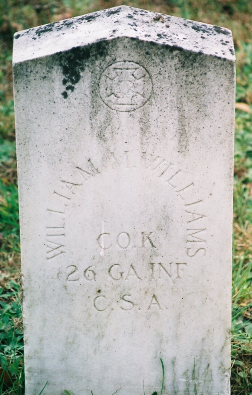

William M. Williams
Born 1843
Life Events
Born: 1843
Family
Father: John Williams Sr.
Mother: Nancy Smith
Siblings
Military Service
Branch: Confederate Army
Conflict: American Civil War
Side: Confederate
Unit: Company K, 26th Georgia Infantry
Biography
William M. Williams was born in 1843 in Ware County, Georgia. He was the youngest son of John Williams and Nancy Smith Williams and a younger brother of Hezekiah Ponder Williams.
William appears in the 1850 United States Census in the household of John and Nancy Williams in Ware County, Georgia, at age seven.
During the American Civil War, William served as a private in Company K, 26th Georgia Infantry, Confederate Army. His older brother Hezekiah Ponder Williams also served in the same company and regiment.
William died on May 12, 1864, at Spotsylvania Courthouse, Virginia, during the Battle of Spotsylvania Court House. He was approximately 20 or 21 years old.
William was buried at Spotsylvania Confederate Cemetery in Virginia. In October 1929, Mrs. C. P. Andrews submitted an application to the War Department for a government headstone to mark his grave. The application was verified in July 1930.
Photos
No additional photographs have been added.
Grave & Burial

Spotsylvania Confederate Cemetery, Spotsylvania Courthouse, Virginia
Sources
-
Pioneer Williams Families of Georgia — Page 15
Type: Published GenealogyPage 15 of Pioneer Williams Families of Georgia contains a biographical entry for John Williams, born in Georgia in 1799 and deceased in 1881. It identifies his wife as Nancy Smith, daughter of William Smith, and states that they married in Liberty County, Georgia. The publication names ten children and provides birth years, spouses, and selected biographical details. It identifies Hezekiah Williams as having married Charlotte Herrin first and Jane McClelland second. It also states that William M. Williams was killed during the Civil War at Spotsylvania, Virginia, in 1864. This is a compiled genealogy; its claims should be corroborated with original records where possible.
Location: Georgia
Supports: John Williams was born in Georgia in 1799, John Williams reportedly died in 1881, John Williams married Nancy Smith in Liberty County, Georgia, Nancy Smith was a daughter of William Smith, John and Nancy Williams had ten children according to the publication, Hezekiah Williams married Charlotte Herrin and later Jane McClelland, Martha Williams married Hiram Herrin and later Ephraim McLendon, William M. Williams reportedly died at Spotsylvania, Virginia, in 1864
-
1850 U.S. Federal Census — John Williams Household
Type: CensusThe 1850 United States Federal Census records the household of John Williams, age 50, and Nancy Williams, age 50, in Division 89, Ware County, Georgia, dwelling 343, family 343. Other household members include Isham Williams, 27; John Williams, 23; Hezekiah Williams, 22; Mary Williams, 16; Martha Williams, 15; Sarah Williams, 10; William Williams, 7; Zelpha Cohen, 28; and William Cohen, 5. Hezekiah's occupation is recorded as farmer, and his birthplace as Georgia. The 1850 census does not explicitly identify relationships between household members.
Location: Division 89, Ware County, Georgia
Supports: John Williams and Nancy Williams were living in Ware County, Georgia, in 1850, Hezekiah Williams was living in the same household, Hezekiah was approximately 22 years old in 1850, Hezekiah was born approximately 1828 in Georgia, Hezekiah's occupation was farmer, Isham, John, Mary, Martha, Sarah, and William Williams were members of the household, Zelpha Cohen and William Cohen were also members of the household
-
1929 War Department Headstone Application — William M. Williams
Type: Military RecordWar Department application for a government headstone submitted October 11, 1929, by Mrs. C. P. Andrews of Spotsylvania, Virginia. The application identifies William M. Williams as a private in Company K, 26th Georgia Infantry, Confederate Army, and records his death as May 12, 1864. The burial location is given as Confederate Cemetery in Spotsylvania, Virginia. The application was verified July 1, 1930.
Location: Spotsylvania, Virginia
Supports: William M. Williams served as a private, William served in Company K, 26th Georgia Infantry, William died May 12, 1864, William was buried in the Confederate Cemetery at Spotsylvania, Virginia, A government headstone was requested in October 1929, The headstone application was verified July 1, 1930